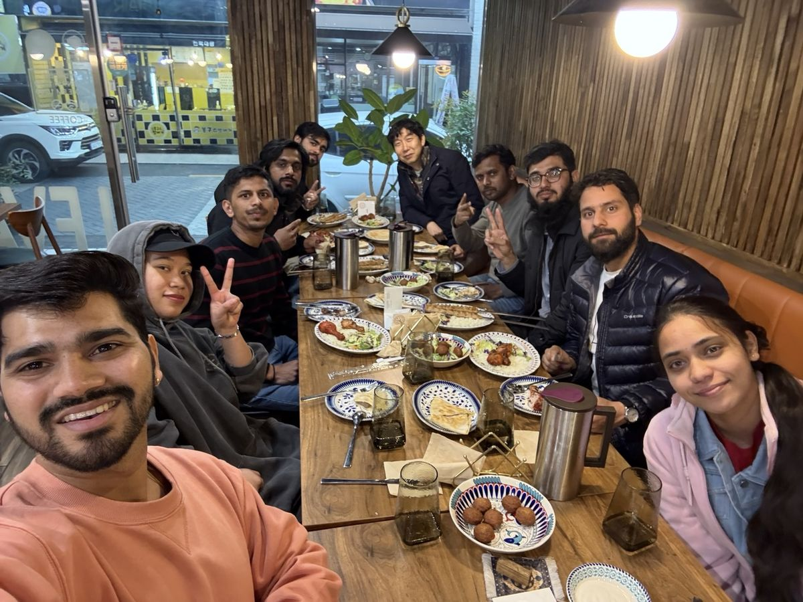
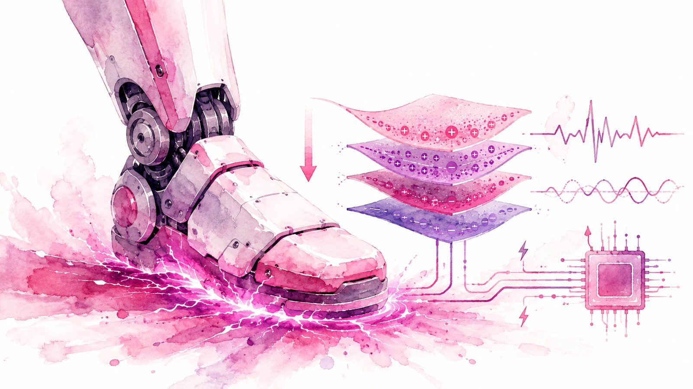
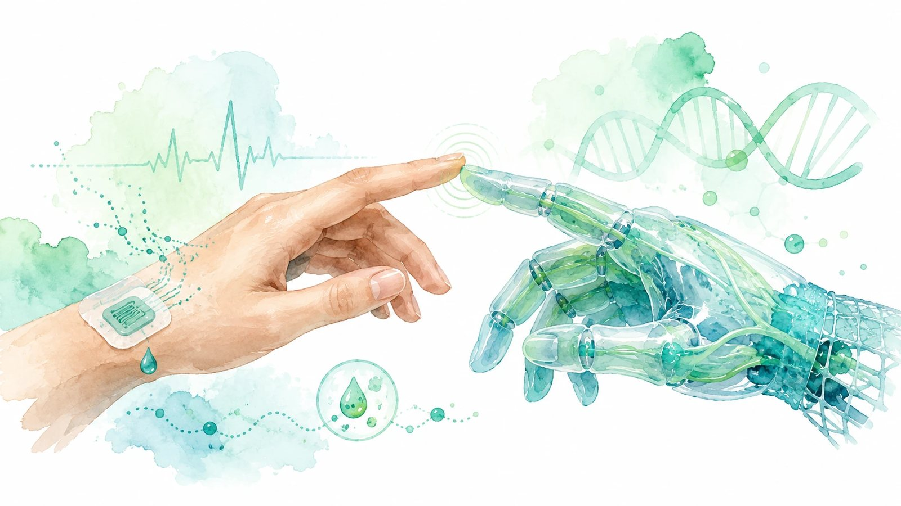
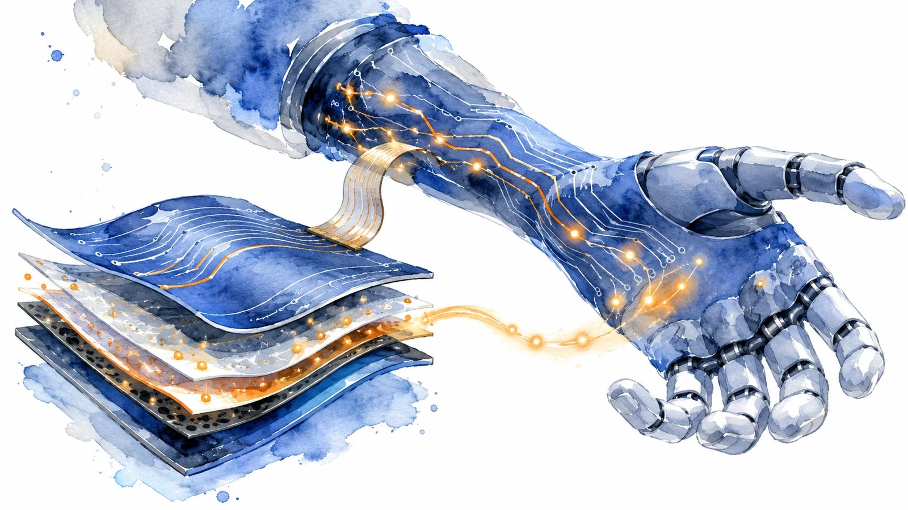
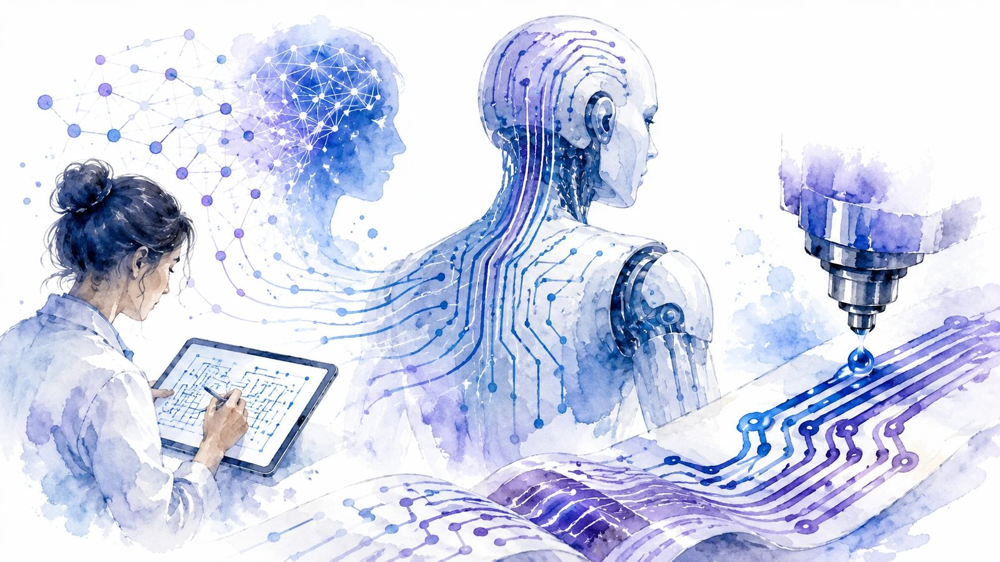
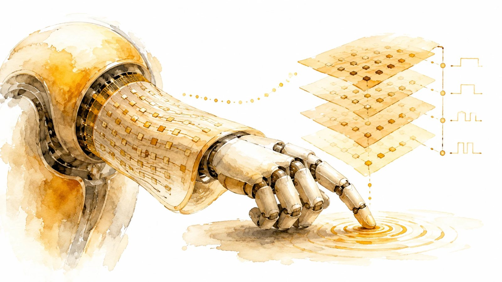

Jeonbuk National University · 유연인쇄전자학과
PPEL+
Printability for Printed Electronics Lab
종이 위에 회로를, 피부 위에 센서를 — 인쇄로 만드는 전자소자의 미래
100+
Publications
21.8
Top journal IF
2,400+
Citations
6
Patents
1
풀블리드 이미지 히어로: 단색 배경 → 팀 단체사진을 전면 배경으로. 위에 다크 그라데이션 + 브랜드 틴트(violet→cyan)를 얹어 어떤 사진이든 톤이 통일되고 글자 가독성이 확보됩니다. 첫 화면에서 "사람 + 연구"가 즉시 전달돼 주목도가 가장 큽니다.
Research · Visual Showcase
연구 분야를 '이미지 갤러리'로
텍스트 카드 대신 매거진형 이미지 그리드. 큰 타일 1개 + 작은 타일들로 리듬을 만들고, 호버 시 줌인 + 제목 오버레이.

ENERGY HARVESTING
압전 · 마찰전기 나노발전기

HEALTHCARE
바이오센서

STORAGE
슈퍼캐패시터

AI × PRINTING
AI 기반 프린티드 일렉트로닉스

DEVICES
프린티드 메모리
2
비대칭 매거진 그리드: 모든 타일을 같은 크기로 두면 밋밋합니다. 대표 분야 하나를 2×2 대형 타일로 키워 시선의 진입점을 만들고 나머지를 작게 배치 → 갤러리처럼 "보는 재미".
People
구성원 사진을 전면에
레포에 학생 사진 12장+이 있는데 활용도가 낮습니다. 균일한 정사각 포토 그리드로 통일(기본 살짝 흑백 → 호버 시 컬러+줌)하면 "사람이 보이는" 따뜻한 연구실 인상을 줍니다.


3
일관된 사진 처리가 핵심: 사진마다 배경·색감이 제각각이면 지저분해 보입니다. 정사각 비율 + 통일된 필터(살짝 그레이스케일→호버 컬러)로 묶으면 출처가 다른 사진도 한 세트처럼 보입니다.
Publications
논문에도 '그래피컬 애브스트랙트' 썸네일
텍스트만 있는 논문 리스트는 잘 안 읽힙니다. 각 논문의 대표 이미지(그래피컬 애브스트랙트)를 왼쪽 썸네일로 붙이면 시선이 머뭅니다.
NEW 2026
Composites · JCR Q1
Oxygen-scavenging MnO₂ MXene inks for 3D-printed flexible asymmetric supercapacitors
A Shan, H Imran, … S Lim
Advanced Composites and Hybrid Materials, 2026 · IF 21.8
NEW 2026
Composites · JCR Q1
Sulfated Cellulose Nanocrystals into Piezoelectricity for Energy Harvesting & Strain Sensing
S Lal, OY Pawar, … S Lim, B Hwang
Advanced Composites and Hybrid Materials, 2026 · IF 21.8
4
썸네일 한 장의 힘: 논문마다 저널 표지/그래피컬 애브스트랙트를 넣으면 리스트가 "포트폴리오"처럼 보입니다. (지금은 연구 이미지로 대체 — 실제로는 각 논문 TOC 이미지를 권장)
Image Guidelines
"많이"보다 "제대로" — 이미지 4원칙
🎨
톤 통일오버레이·필터로 출처가 다른 사진도 한 세트처럼. 색 튀는 사진 방지.⚡
성능WebP/AVIF 변환 + width/height 지정 + lazy-load로 화질은↑ 로딩은↓ (현재 sooman.png 3.5MB 등 최적화 여지).📐
비율 고정정사각·16:9 등 비율을 고정해 레이아웃 흔들림(CLS) 방지.🔬
진짜 연구 사진스톡 대신 실제 소자·SEM·실험 장면이 신뢰와 주목을 동시에.5
주의: 이미지를 늘릴수록 용량 최적화가 중요합니다. 현재
image/sooman.png(3.5MB), Sooman Lim.png(604KB) 등은 WebP로 바꾸면 80~90%↓. 이미지 중심으로 가되 성능은 지키는 게 핵심입니다.PPEL+ 이미지 중심 리디자인 컨셉 v2 · 실제 레포 사진 사용 · 우측 상단 버튼으로 라이트/다크 비교